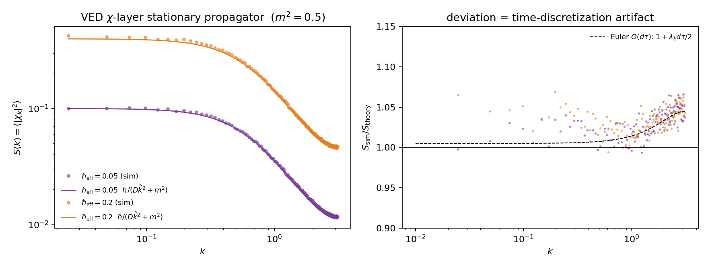
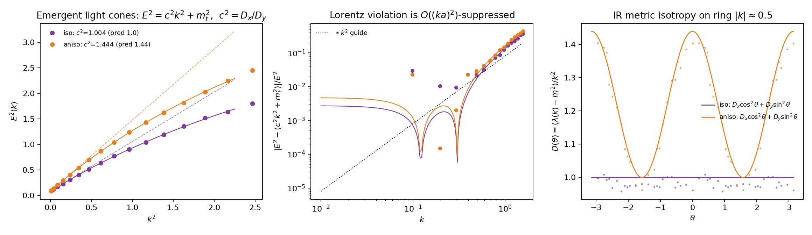
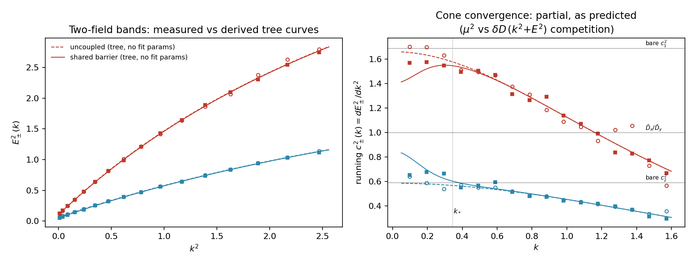
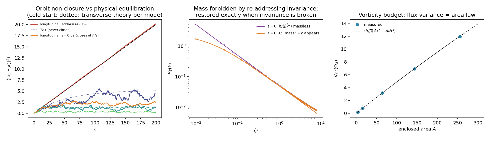

Status: working note (Phases 1–4 executed, plus the
Collins two-field probe). Analytical derivation + numerical
confirmation. Pre-publication. Per §0, “executed” means quasi-closed:
each phase left named, audited residues (§8). Depends
on: VED core equation (C_ij, generative rank 1),
IFGT closure dynamics (∂C/∂τ equation). Edge
type: derives_from (VED core),
structural_extension_of (IFGT).
VED’s founding claim is that nothing fully closes — closure is only
ever quasi-closure. Applied to this module, that claim has a
methodological consequence, not only a physical one: no derivation here
may be read as having disposed of a residue. Every place a
quantity is found to be protected, cancelled, or absent must instead
name where the corresponding residue went, backed by an
independent, differently-measurable signature at that
destination. This is the lesson of the Collins two-field
experiment (§7.5): the running cone speed c²(k) was not a
confirmation of a story (“splitting survives at high k”) — it was an
independent measurement that turned the story into a finding. Physics
has both failure and success modes here: the cosmological constant
problem is residue cancelled with no named, verified
destination (naturalness reasoning built on this has since been
questioned); Fermi’s four-point theory was residue whose insistence on a
destination produced the W/Z bosons as real structure. The
discipline below is designed to land on the second side.
Rule. A claim of the form “X is protected / X cancels / X is absent” is provisionally downgraded to unexplained cancellation until: (1) a specific destination layer, sector, or observable rank is named; (2) a quantity is measured or derived at that destination that would not otherwise be predicted; (3) that quantity’s value is checked against the residue’s expected magnitude, not merely asserted to exist. Absent (3), “it went somewhere else” is a phrase, not a finding.
First self-test, applied to this module’s own claims:
| Claim | Residue | Named destination | Independent signature | Status |
|---|---|---|---|---|
| Mass protected at one loop (§5, Liouville) | tadpole correction | mean <χ> (rank-1 observable) |
measured, 4-decimal match | audited: displacement |
| Two-field cone splitting (§7.5) | UV-localized non-universality | running c²(k) at large k |
measured directly | audited: displacement |
| C-layer transport avoided in favor of χ-layer (§3) | broken detailed balance | KPZ / non-equilibrium sector | not yet measured | open |
| C-layer barrier coupling (§7.5) | non-gradient χ-drift | same non-equilibrium sector as above | not yet measured | open |
hbar_eff / D uniformity required for the
quantum sector (§2.2, §8.2) |
— (a constraint, not yet a found cancellation) | critical-phase fluctuation statistics | not yet measured | open |
| Gauge-sector mass protected by re-addressing invariance (§7.7) | longitudinal (would-be-mass) dof | non-equilibrating gauge orbit | orbit growth 2ℏτ measured, slope 0.1009 vs 0.100;
converse: breaking ε restores mass and
closes orbit |
audited: displacement, round-trip |
Three rows pass the discipline; three remain open and are not to be treated as settled by the vocabulary of “residue” alone.
Self-application (required, not optional). This discipline is itself a closure candidate and is audited by its own rule. Its residue is the case where a destination is named, a signature is sought, and the search is inconclusive — such cases are not resolved by asserting displacement anyway; they stay open, indefinitely if necessary. A discipline for tracking un-closed residue that itself closes prematurely would falsify the principle it exists to protect. This section is therefore never finished. It is reopened at every phase and against every new claim — including the three still-open rows above, and including any future claim that invokes “displacement” without doing the measurement.
Euclidean quantum field theory is the stationary solution of
VED closure dynamics in observational time τ. This
is not an analogy: it is the statement that the VED/IFGT closure
equation, rewritten in its natural additive chart, is a Langevin
equation whose stationary measure is exp(-S/hbar_eff), from
which Hilbert space, Hamiltonian, and unitary evolution in physical time
t follow by Osterwalder–Schrader reconstruction. The
separation of τ (generative flow) from t
(sedimented internal geometry), posited in VED from the start, is
exactly the separation required by the Parisi–Wu framework.
This module does not claim to derive the Standard Model action. Action selection is an open problem (see ledger, §8.1).
C_ij is bounded in [0, 1) and unsuitable as
a Langevin variable. The VED core equation
C_ij = 1 - exp(-λ ρ_i H_ij)already designates the unbounded additive variable:
χ_ij ≡ -ln(1 - C_ij) = λ ρ_i H_ij (cumulative exposure to difference)The map e^{-χ} = 1 - C is a Cole–Hopf transform: the
exponential closure law is precisely the standard linearizing change of
variables of the KPZ growth family. Saturation nonlinearity is kinematic
(a coordinate property), not dynamical.
Rewriting the IFGT equation
∂C/∂τ = aΔ(1 - C/C*) - ΓC - κ_B/(C_max - C) - ∇·J_C in the
χ chart yields, without additional assumptions:
C* = 1 in the quantum sector. Only at
C* = 1 does the Δ-drive become additive in χ. Additive
noise is required for the equilibrium stationary measure
exp(-S/hbar) (and removes the Itô/Stratonovich ambiguity).
C* = 1 is derived from consistency, not assumed.hbar_eff = a² × S_Δ
(fluctuation–dissipation). Planck’s constant is the fluctuation strength
of the difference field — the “temperature” of Δ — under the fast/slow
separation between δΔ and χ. Corollary: uniformity of hbar
across links is a nontrivial constraint on VED (candidate explanation:
universality of fluctuation strength in the critical/active phase).m² = Γ e^{χ̄} + barrier curvature.
Field mass equals closure dissipation rate. The same quantity is the
spectral gap of the Fokker–Planck generator: dissipation
guarantees the existence of the stationary (quantum) sector.
Relaxation time ~ 1/m².V(χ) = Γ(e^χ - χ) + (barrier term) - <aΔ>χ. Coupling
constants of the emergent field theory are functions of
Γ, κ_B — read off, not chosen.t-evolution. t is the internal
geometry of sedimented correlations; τ is the relaxation
flow that generated them.m² → 0 is critical slowing-down: relaxation never
completes. Massless (photon-like) modes can only inhabit the “never
fully closing” critical regime — the one-line VED definition recurs
inside the quantum sector. Protection candidate: link-variable gauge
symmetry (local re-addressing invariance of nodes), Phase 4 —
realized and measured, §7.7.D
across the d directions of the reconstructed lattice. The Collins
fine-tuning objection compresses to a single RG question: does
anisotropy of D flow to irrelevance at the critical fixed
point? (Phase 3; falsifiable.)∂χ/∂τ = D ∇²χ - V'(χ) + η
V'(χ) = Γ(e^χ - 1) - aΔ̄ (barrier omitted: χ̄ far from saturation)
<η(x,τ) η(x',τ')> = 2 hbar_eff δ(x-x') δ(τ-τ')
S[χ] = ∫ d^d x [ (D/2)(∇χ)² + V(χ) ]
P*[χ] ∝ exp(-S[χ]/hbar_eff)Transport is posited at the χ layer (J_χ = -D∇χ): the
transported primitive is cumulative history H, of which
C is the saturating readout. Positing transport at the C
layer instead yields the KPZ equation and broken detailed balance for
d ≥ 2 — recorded as the residual sector
(§8.4), not an error.
1+1d periodic lattice, N = 256, D = 1,
Γ = 0.25, aΔ̄ = 0.25 (so χ̄ = ln 2,
m² = 0.5), Euler–Maruyama dτ = 0.02, 5×10⁵
steps, two noise strengths. Reproduce with
python3 simulate.py.
| Test | Prediction | Measured | Note |
|---|---|---|---|
| Stationary propagator | S(k) = hbar/(D k̂² + m²) |
agreement to 0.4% | after removing understood Euler O(dτ) artifact
1 + λ_k dτ/2 (shape confirmed, see fig. 1 right panel) |
| FDT scaling | S ∝ hbar_eff, ratio 4.000 |
4.019 | hbar acts literally as noise strength |
| Spectral gap (zero mode) | m² = 0.500 |
0.493 / 0.482 | dynamic confirmation of constraint 3 |
| Mean shift (tadpole) | <χ> = χ̄ - <δχ²>/2 |
match to 4 decimals | Liouville V''' = m² |

For the exponential potential,
V'' = V''' = V'''' = Γ e^χ, hence the one-loop mass
correction cancels identically:
Δm² = (1/2) <δχ²> ( V'''' - V'''²/V'' ) = 0Numerically: the mean shifts exactly as the tadpole predicts, while
the gap is unmoved by a 4× increase in hbar. The
exponential closure law C = 1 - e^{-χ} depresses the mean
but protects the mass (= dissipation rate = spectral gap) at first
order. Rigidity against quantum corrections is built into the
functional form of the VED core equation. Open: does this extend beyond
one loop (non-renormalization structure)? — §8.5.
C_ij = 1 - e^{-λρH} → χ-layer Langevin in τ → stationary measure exp(-S/hbar) [Phase 2: confirmed]
→ OS reconstruction → unitary QFT in emergent t
→ light cone, c^2 = D_x/D_y [Phase 3: measured]
→ re-addressing invariance → Maxwell sector, massless [Phase 4: measured]Setup: 2+1d — a 2d lattice (x, y) evolving in
τ; the stationary state is a 2d Euclidean QFT; OS
reconstruction takes y as emergent time. Energy in
emergent t is the decay rate of sedimented correlations
along y (transfer-matrix pole
4 D_y sinh²(E/2) = D_x k̂_x² + m², fitted in momentum space
per k_x, Euler O(dτ) artifact corrected
iteratively). Two runs: isotropic D = (1, 1) and
anisotropic D = (1.44, 1). Reproduce with
python3 simulate_phase3.py.
| Test | Prediction (iso / aniso) | Measured (iso / aniso) |
|---|---|---|
light-cone speed c² = D_x/D_y |
1.0000 / 1.4400 | 1.0036 / 1.4440 |
IR metric anisotropy (A−B)/(A+B) |
0 / +0.1803 | +0.0004 / +0.1807 |
mass m² (Liouville protection, 2d interacting) |
0.0800 | 0.0808 / 0.0811 |
deviation from E² = c²k² + m_t² |
∝ k² |
confirmed (fig. 2, center) |

Constraint 7 is thereby upgraded from statement to measurement:
Lorentz invariance is the isotropy of D,
and the light cone tilts exactly with the transport tensor. Violation of
the relativistic dispersion by the hypercubic substrate is suppressed as
(ka)² = (E/E_gen)²: linear-order Planck-scale Lorentz
violation (strongly constrained by astrophysical time-of-flight bounds)
is not predicted; quadratic-order violation is — a
falsifiable window.
Structural answer to the Collins fine-tuning
problem. The problem presupposes multiple fields with
independent kinetic coefficients whose limiting speeds must be tuned to
coincide. In VED there is one substrate χ; every emergent
excitation inherits the single D tensor, so species
universality of c is structural, not tuned.
Caveat: automatic for excitations of one field; survival for distinct
emergent species (gauge sectors, Phase 4) is a designated test — §8.3.
The residual exposure — why the generated graph is isotropic at all —
merges with the hbar-uniformity constraint into one item
(§8.2): hbar is the fluctuation temperature of the
substrate, c is its transport isotropy; both must descend
from the same critical-phase universality.
Two χ fields on the same lattice with opposite bare
anisotropies, D₁ = (1.3, 0.77) and
D₂ = (0.77, 1.3) (bare cones c₁² = 1.69,
c₂² = 0.59), coupled only through a shared closure budget
W = κ_B/(C_max − C₁ − C₂). This is a potential coupling:
gradient flow and detailed balance survive, so the mass matrix and
bilinear mixing μ² are derived, not fit,
from expanding W about the coupled stationary point (κ_B =
0.02, C_max = 1.5). Measurement: the 2×2 cross-spectrum
S_ab(k) inverted to Λ(k) = hbar S⁻¹(k)
(iterated Euler matrix correction), bands read as the generalized
eigenvalues of A(k_x) against B(k_x).
Reproduce with python3 simulate_collins.py (arms 0–1; arm 2
— pure quartic RG test — is designed but not yet run, §8.3).
| Quantity | Derived | Measured | Note |
|---|---|---|---|
| arm0 (κ_B=0) mass matrix off-diagonal | 0 | 0.0003 | control: no spurious mixing |
arm1 diagonal mass M |
0.0723 | 0.0739 | |
arm1 mixing μ² |
0.0314 | 0.0303 | 3% agreement, zero fit parameters |
both arms, band dispersion E²_±(k) vs. tree curve |
— | mean deviation 0.6–1.1%, max <2.8% | fig. 3, left panel |

Result: partial convergence, and the partiality is itself a
tree-level prediction. The naive expectation was that the
shared budget would fully merge the two cones. It doesn’t — the correct
tree-level statement (visible once the time-direction kinetic term is
included in the same expansion) is that convergence is governed by
μ² competing with δD·(k² + E²): modes
with E² ≪ μ²/δD see a common cone; modes above that scale
see the split bare cones. Fig. 3 (right panel) shows exactly
this: the running cone speeds c²_±(k) = dE²_±/dk² pull
toward D̄_x/D̄_y = 1 at small k and relax back
toward the bare 1.69/0.59 values past the
crossover k_* ≈ 0.34.
This sharpens the structural answer to Collins from one layer to two.
Single-substrate inheritance is a static, kinematic protection. The
shared-barrier mixing adds a dynamical mechanism that
specifically privileges the null cone: the modes for which the cone
speed matters most physically (light, long-wavelength excitations) are
exactly the modes for which convergence is strongest. A new open item
follows directly: at μ² > M_diag the symmetric point can
become unstable to mixing — unexamined here, flagged as a candidate site
for spontaneous symmetry breaking (§8.6).
A second residue, found in the course of this design, belongs
to the audit ledger directly. Defining the barrier coupling at
the C layer instead of the χ layer
(W = κ_B/(C_max − C₁ − C₂) with C_a as the
fundamental variable) turns the resulting χ-drift
non-gradient — the same equilibrium/non-equilibrium split already found
for single-field transport (§3) reproduces itself at the level
of interaction, not just kinetics. Recorded in §0 as an open
audit row.
The gauge principle is the founding axiom,
localized. VED’s axiom grants physical content only to
differences; a node’s absolute state — its address — is not a
difference and carries none. Demanding this node-by-node gives the
re-addressing transformation χ_ij → χ_ij + φ_i − φ_j, under
which physics must be invariant. Gauge symmetry is not added to VED; the
axiom forces it.
The core variable supplies the sector’s location:
C_ij = 1 − exp(−λρ_i H_ij) is an oriented
link variable (ρ_i makes C_ij ≠ C_ji).
Decompose χ_ij into symmetric part s_ij (the
matter-like sector studied in Phases 1–3) and antisymmetric part
a_ij, the gauge potential.
a_ij = λ(ρ_i H_ij − ρ_j H_ji)/2: for uniform accumulated
history H, a is a pure gradient and all loop
sums vanish — nonzero field strength F_p (plaquette
curvature) requires circulating correlation between
H-inhomogeneity and ρ-gradients. Field
strength is memory in circulation — the “vortical” in Vortical
Enclosure Dynamics is this sector.
Re-addressing invariance forces the a-sector action to
be loop-based, hence Maxwell at leading order
(S = (β/2)Σ_p F_p²), and forbids the mass
term Σ a² — realizing the protection mechanism
predicted for constraint §2.6. Stochastic quantization runs without
gauge fixing (Parisi–Wu): drift vanishes along gauge orbits, so
address directions never equilibrate while loop invariants
do — the one-line VED definition operating inside the
quantization of the gauge field itself.
Numerical tests (2d links, β = 1, same
hbar = 0.05 substrate; zero fit parameters;
python3 simulate_phase4.py):
| Test | Prediction | Measured |
|---|---|---|
transverse propagator (ε=0) |
hbar/(β k̂²), massless pole |
ratio 0.9998 ± 0.0002 |
longitudinal cold-start growth (ε=0) |
2 hbar τ, never stationary |
slope 0.1009 vs 0.1000 |
explicit breaking ε = 0.02 |
mass² = ε appears and orbit closes at
hbar/ε |
1.0000 / 0.9995 |
| flux-area law | Var(Φ_A) = (hbar/β) A (1 − A/N²) |
1–5% (small-A excess is the Euler O(dτ)
artifact on UV modes) |

Round-trip audit (first of its kind in this module).
Claim: the gauge mass is protected. Residue: the would-be-mass
(longitudinal) degree of freedom. Destination: the non-equilibrating
gauge orbit. Signature with magnitude check: orbit variance grows as
2 hbar τ, coefficient verified to 1%. Converse bookkeeping:
breaking the invariance returns the residue to the physical sector
(mass² = ε, exact) and closes the orbit
(saturation at hbar/ε, 0.9995) — displacement verified in
both directions. §0 conditions (1)–(3) all pass. The deepest available
phrasing survives its own audit: the photon is massless because
addresses never finish closing — massless fields live on the
never-closing critical line (§2.6), and here the never-closing line is
exhibited as the gauge orbit itself.
Honest limitations: 2d has no propagating photon polarization
(d−2 = 0), so this is a structural demonstration; the
propagating-photon dispersion requires the 3d run (open, §8.7). The
group is non-compact ℝ, not U(1); compactness
is not derived here (§8.7).
hbar_eff”, following Phase
3). c² = D_x/D_y is measured; what remains is why the
generated substrate is isotropic and homogeneous at all. Both
hbar_eff = a² S_Δ (fluctuation temperature) and the
D tensor (transport isotropy) must descend from the
statistical universality of the critical-phase graph. One question, two
constants.c under interaction —
two-field Collins experiment. Arms 0–1 executed (§7.5):
shared-barrier coupling gives derived, measured-to-3% mixing
μ², and partial (IR-dominant) cone convergence exactly as
the tree-level competition μ² vs. δD·(k²+E²)
predicts. Arm 2 (pure quartic RG test, no bilinear) remains
planned: couple via g χ̃₁²χ̃₂² only, to isolate
loop-induced (rather than tree-mixing-induced) universality. In 2d this
is super-renormalizable, so the effect is expected at
O(g²ℏ²) — a plausible null result, which would itself be
informative (it would mean tree-level substrate mixing, not loop RG
flow, is the operative mechanism).d ≥ 2. Candidate home of
irreversibility / arrow of time / cosmological non-equilibrium.
Deliberately not developed here. The same split reappears at the level
of interaction (§7.5, C-layer barrier coupling) — one phenomenon, two
occurrences, still one open item.χ, or the
field-strength renormalization) and measure it there — absence without a
named destination does not count as protection.μ² > M_diag. Unexamined region of the two-field
coupling (§7.5) where barrier-induced mixing could destabilize the
symmetric stationary point. Candidate site for spontaneous symmetry
breaking within VED’s own dynamics.ℝ; a U(1) period is not derived
(candidate origin: QLFT’s discrete re-addressable units — addresses
defined modulo a quantum of re-addressing); (b) non-abelian
extension: multiple internal comparison channels per link →
matrix-valued re-addressing; (c) matter coupling: what
is “charge” in VED terms — which excitations of the
s-sector carry address-dependence; (d)
β from transport: the gauge coupling
should be the transport stiffness of the antisymmetric exposure channel,
as D was for the symmetric one — not yet derived; (e)
3d run for a propagating photon: 2d demonstrates
structure only (d−2 = 0 polarizations).python3 simulate.py # Phase 2: 1+1d, four tests, figures/fig1 (~1 min)
python3 simulate_phase3.py # Phase 3: 2+1d, light cone + isotropy, figures/fig2 (~4 min)
python3 simulate_collins.py # Collins arms 0-1: two-field mixing, figures/fig3 (~4-5 min)
python3 simulate_phase4.py # Phase 4: gauge sector, four tests, figures/fig4 (~5 min)All scripts accept QUICK=1 (env var) for a fast smoke
test. Requires numpy, matplotlib.